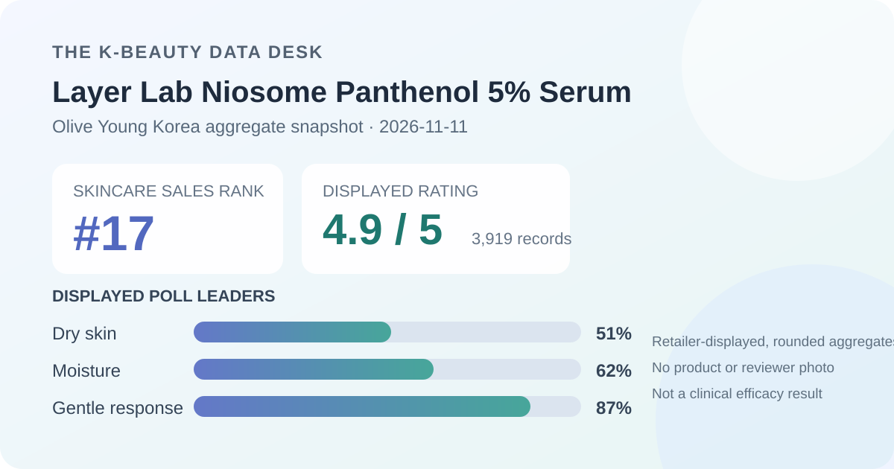

Data captured November 11, 2026. Olive Young Korea displayed the title “레이어랩 니오좀 판테놀 5% 세럼 30ml 기획 (+1.5ml*5ea)”; this article uses “Layer Lab Niosome Panthenol 5% Serum” as a readable English label. It uses only the retailer's title, rank, aggregate rating, star distribution, and shopper polls. It does not copy or translate individual review text, names, or photos, and it makes no claim of firsthand use.

The short version: Layer Lab Niosome Panthenol 5% Serum appeared at number 17 in the captured skincare sales ranking. Its product header and detailed review view agreed on 4.9 out of 5 from 3,919 records. The displayed star rows were 96% five-star, 3% four-star, 1% three-star, and 0% in the two remaining rows. Dry skin, moisture, and gentle were the leading poll responses at 51%, 62%, and 87%. These are favorable retail signals, not proof of barrier repair, deep hydration, clinical efficacy, or universal tolerance.
The displayed average was 4.9 stars. Olive Young showed 3,919 review records beside the product header, and the detailed review view repeated both 4.9 and the same total. That agreement matters: it avoids combining a current header with stale detail statistics. It does not reveal who reviewed, how linked options are pooled, how moderation works, or how many purchasers never submitted a rating.
The detailed view displayed these whole-number star shares:
The displayed rows sum to 100%, but they are rounded percentages rather than raw counts. A 96% five-star share indicates a strongly positive captured rating mix at this retailer. It does not show that 96% of all purchasers were satisfied, that each option received the same scores, or that another person will have the same experience.
The 0% two- and one-star rows should also be read at the interface's precision. They do not prove that no low rating exists or that adverse experiences are impossible. Rounding, linked configurations, review eligibility, moderation, purchase timing, and future submissions can all affect the display.
The skin-type panel displayed 51% dry, 43% combination, and 6% oily. Dry respondents formed the largest visible group, but the combination share was also substantial. The result is best used to describe who was represented in this optional-looking poll, not who should buy the serum.
The interface did not show the panel's denominator or a standardized skin assessment. Self-identification can vary with climate, season, routine, medication, cleanser, moisturizer, sunscreen, and current skin condition. A smaller oily share does not demonstrate worse performance for oily skin; it may simply reflect who answered.
The concern panel showed 62% moisture, 31% soothing, and 7% wrinkle or brightening. Those categories sum to 100% at the displayed precision. The result places the visible retail conversation mainly in moisture and soothing territory, which is consistent with how the listing is positioned.
Consistency with a product name is not a hydration test. No corneometer measurement, transepidermal-water-loss result, comparator, standardized application amount, controlled environment, or stated observation period was captured. The panel cannot quantify how much hydration changed, whether a barrier endpoint changed, or whether the result differs from another serum.
The irritation panel displayed 87% gentle, 12% ordinary, and 1% felt irritation. The dominant response is favorable, while the nonzero irritation row is a useful reminder that retail feedback is not universal. Even a large favorable share cannot predict an individual's reaction.
The source did not provide a patch-test protocol, clinician grading, exposure duration, severity scale, or panel denominator. It also cannot screen allergy history, active dermatitis, a compromised barrier, medication use, or interactions with other products. People with known sensitivities should rely on the current regional label and appropriate professional guidance, not this aggregate alone.
The retailer categorizes the item as a serum. In general terms, serums are leave-on products intended to spread in a relatively thin layer before moisturizer or sunscreen. That broad format description does not verify this product's viscosity, slip, tack, scent, absorption speed, finish, pilling behavior, or compatibility with makeup.
I did not open, dispense, spread, smell, or layer the serum. The local illustration deliberately avoids the bottle, packaging, product photographs, and human skin. Real sensory behavior depends on the current formula, application amount, temperature, humidity, previous layers, and later routine steps.
“Niosome Panthenol 5%” is part of the retailer-displayed product name. This article preserves that identifying language but does not independently confirm the current formula, test the analytical concentration, identify a delivery system, or infer how much ingredient reaches a particular skin layer.
A high rating and moisture-oriented poll cannot establish that niosomes improve delivery, that panthenol caused the scores, or that a barrier was repaired. Those conclusions would require a verified formula, defined comparator, adequate sample, controlled conditions, measurement method, and stated time frame. Product naming is useful for identification; it is not a substitute for efficacy evidence.
Rank 17 describes one moment in Olive Young Korea's skincare sales list. It is not a quality score. Promotions, discounts, gifts, stock, advertising, seasonality, and short-term demand can all influence placement.
The captured listing showed a 30 ml serum with five 1.5 ml extras, a ₩42,000 reference price, and a ₩27,900 displayed promotional price. Those details can change or depend on the selected option. Confirm the live volume, formula, seller, stock, gift terms, return conditions, and checkout total before making a purchase decision.
Layer Lab Niosome Panthenol 5% Serum was the first distinct unpublished product after 16 higher-ranked products or promotional configurations matched existing coverage. The listing passed the consistency check: its ranking and detail titles agreed, and the header and official review view both showed 4.9 stars from 3,919 records.
The captured feedback is strongly favorable and moisture-oriented. The 96% five-star row, 62% moisture response, and 87% gentle response are useful storefront facts with a clear date. They do not prove deep hydration, barrier repair, soothing efficacy, enhanced delivery, clinical performance, or universal suitability. The most defensible takeaway is that this was a mature, positive retail aggregate whose survey panels still require careful limits.
Both captured review surfaces showed 4.9 out of 5 from 3,919 records. The star rows were 96% five-star, 3% four-star, 1% three-star, and 0% each for two- and one-star.
Dry skin led at 51%, followed by combination at 43% and oily at 6%. That describes representation, not proven suitability.
No. It is a rounded shopper-poll response, not a controlled or instrument-measured hydration result.
No. The panel cannot predict allergies, sensitivity, interactions, or individual tolerance.
No. The analysis uses retailer-displayed aggregates only and does not claim firsthand use.
Source: Olive Young Korea product listing for Layer Lab Niosome Panthenol 5% Serum 30 ml plan, captured November 11, 2026. Rank, price, availability, gifts, counts, percentages, and linked configurations can change after capture.
Published by The K-Beauty Data Desk. This is an editorial analysis of retailer-displayed aggregates, not medical advice or a substitute for the current product label.
← All reviews · Review-volume rankings · Skin-poll explorer · Methodology